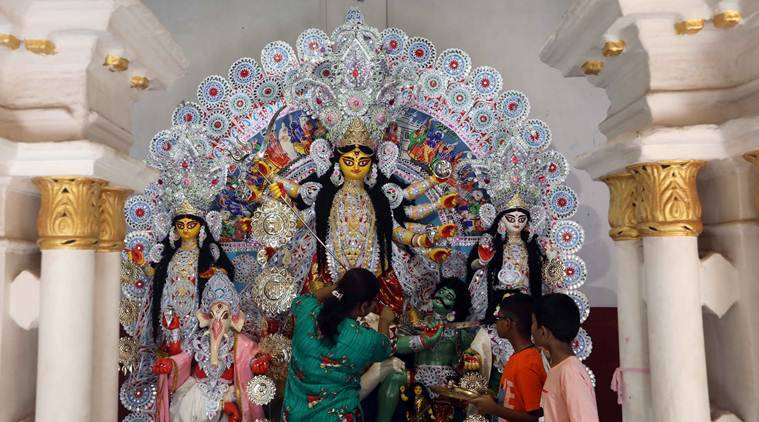
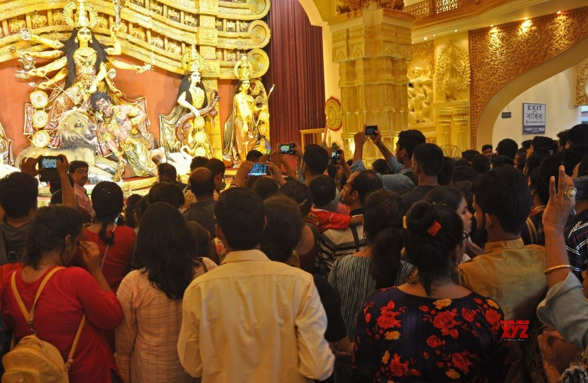
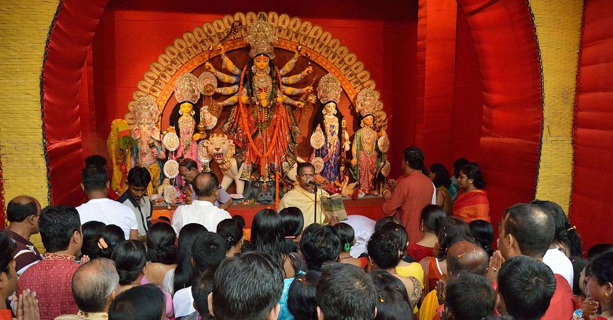
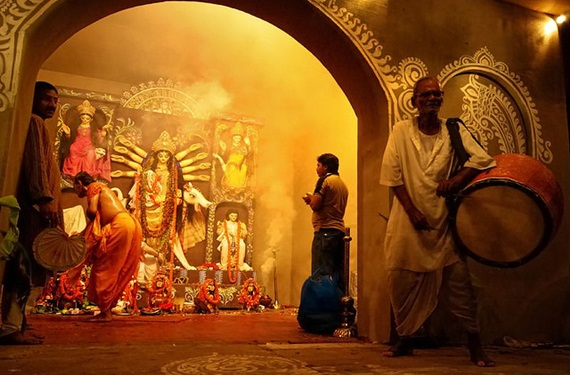
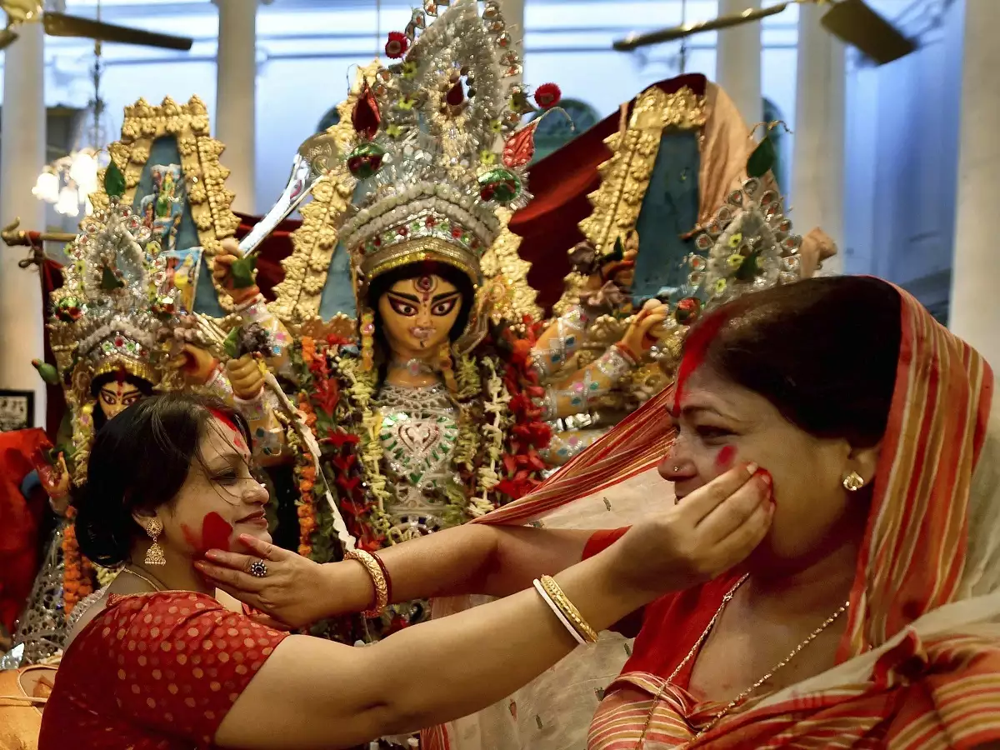

|
Maha Sasthi |
|
|---|---|
|  |
The sixth day of Durga Puja is officially the first day of the five-day festival of Durga Puja. On this day, the Ghatasthapana or the Kalashsthapana (literally meaning placing of the pot invoking the Goddess) takes place. The rest of the day is reserved for cultural programmes that mostly take place in the evening. Another highlight of the day is the "Agomoni" programme. A set of songs in Bengali and Sanskrit are traditionally sung and performed to welcome the Goddess to her maternal home. |
|
Maha Saptami |
|
|  |
Day two of Durga Puja begins with the pushpanjali (offering of flowers to the Goddess)
and the 'Kola Bou snan' (bathing of the banana tree). 'Kola' meaning banana and 'bou'
meaning wife, the Kola Bou is believed to be the consort of Lord Ganesha. As such, a
banana tree is given a bath and draped in a white saree with a red border — symbolic of
a married Bengali woman. The Kola Bou is always placed next to Ganesha in the ornate
arrangement.
|
|
Maha Ashtami |
|
|  |
The most important day of the festival, the third day begins with pushpanjali and aarti. On this day, people usually perform the Kumari Puja, wherein prepubescent girls are worshipped for being a manifestation of the Goddess herself. The highlight of the day, however, is the sandhi puja — which is done right when the Ashtami tithi ends and the Navami tithi begins. It is believed that during this time, Devi Chamunda — an avatar of Goddess Durga — appears to slay demons Chanda and Munda. |
|
Maha Nabami |
|
|  |
Just like Ashtami, Maha Navami also begins with pushpanjali and aarti. It is the last day of the festivity, and people usually celebrate it with an overwhelming sense of grief. While in the past people used to sacrifice animals on the day, the practice has largely stopped on humanitarian grounds. Now, people offer pumpkins to the Goddess, keeping with the tradition. |
|
Vijaya Dashami |
|
|  |
This is the last day of the festivity, which is usually marked by the traditional Maa Boron, that is, prepping the Goddess for her journey back to Mount Kailash. The highlight of the day is the sindoor khela, for which married women greet and smear some vermillion on Goddess Durga, and on themselves,a bitter-sweet way of bidding the Goddess adieu. Nowadays, this ritual has become more inclusive. Men, unmarried women and even widows get to participate. |
| Previous Page |
| Next Page |